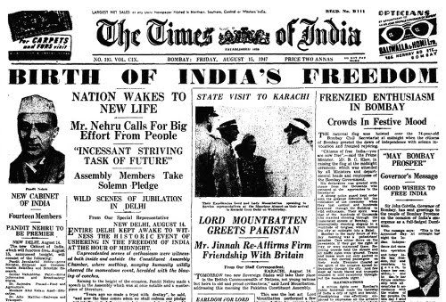
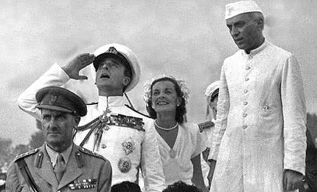
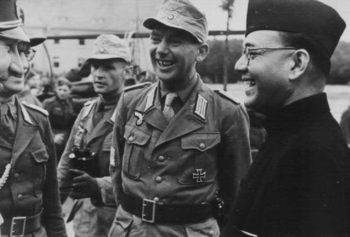
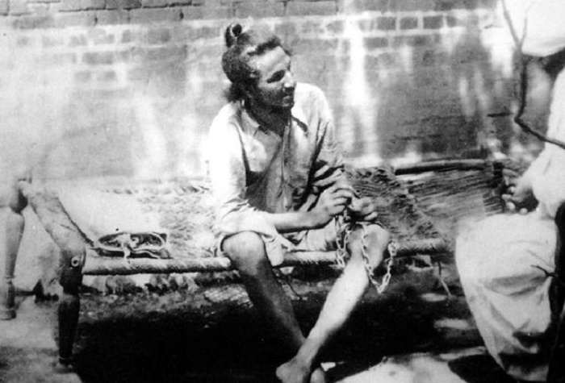
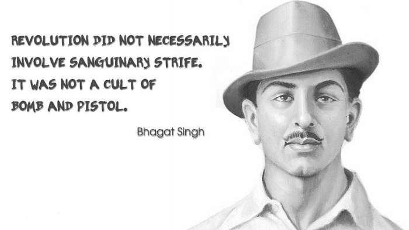

A view of the events
5-August,1947 : News Paper
Lets have a round of India before 1947

15-August,1947 : 1st Salute by English governor Mount baten

Netaji

Bhagat Singh is considered to be one of the most influential revolutionaries of Indian Nationalist Movement.


>